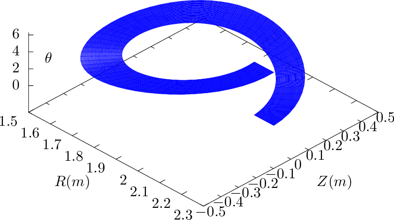
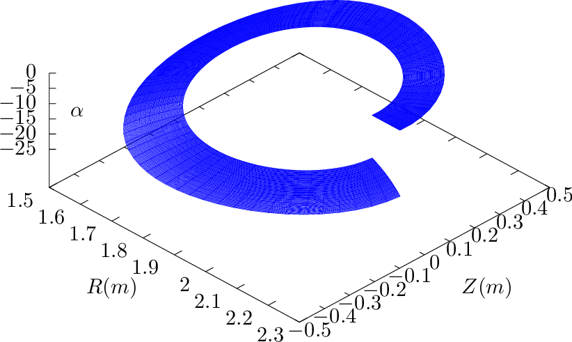
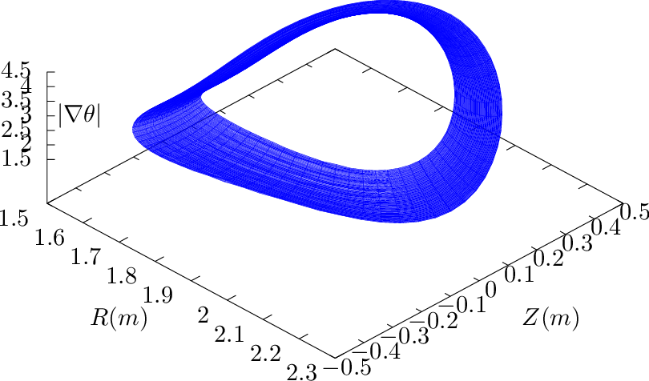
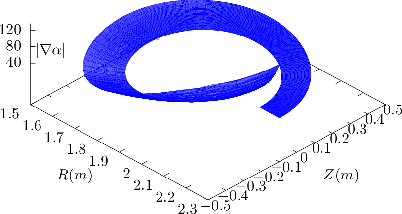
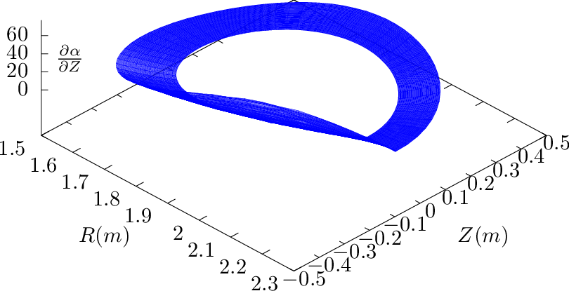
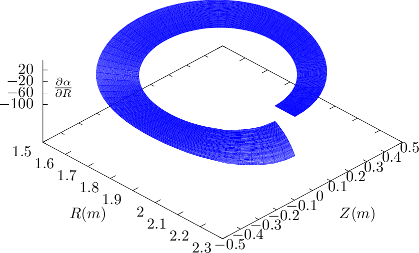

d𝜃. The
gradient of α is then written as
d𝜃. The
gradient of α is then written as The generalized toroidal angle α is defined by Eq. (300), i.e., α = ϕ −δ, where δ = ∫
0𝜃 d𝜃. The
gradient of α is then written as
 | (303) |
 | (304) |
Another method of computing the above quantities: Using Eqs. (209) and (210), expression (302) is written as

![( ) [ ˆ ( - - ) ( - - ) ]
∇ψ ⋅∇ α = − RZ 𝜃ˆR + R-R𝜃ˆZ ⋅ ϕ- + ∂δ-R-Z𝜃 − ∂δR-Zψ ˆR + ∂δR-R ψ − ∂-δR-R𝜃 ˆZ
𝒥 𝒥 R ∂ψ 𝒥 ∂𝜃𝒥 ∂𝜃𝒥 ∂ψ 𝒥
R ( ∂δ R ∂δR ) R ( ∂δR ∂δ R )
= − --Z𝜃 -----Z𝜃 − ----Zψ + --R 𝜃 ----Rψ − -----R𝜃 . (306)
𝒥 ∂ψ 𝒥 ∂𝜃𝒥 𝒥 ∂𝜃𝒥 ∂ψ 𝒥](tokamak_equilibrium398x.png)
![[ ˆ ( - - ) ( - - ) ] ( )
∇α ⋅∇ 𝜃 = ϕ- + ∂δ-R-Z𝜃 − ∂δR-Zψ ˆR + ∂δR-R ψ − ∂-δR-R𝜃 ˆZ. ⋅ R-ZψRˆ− RR ψˆZ
R ∂ψ 𝒥 ∂𝜃𝒥 ∂𝜃𝒥 ∂ψ 𝒥 𝒥 𝒥
( ∂δ R ∂δ R ) R (∂δ R ∂δ R ) R
= ∂ψ-𝒥 Z 𝜃 − ∂𝜃-𝒥-Zψ 𝒥-Zψ − ∂𝜃-𝒥-Rψ − ∂ψ-𝒥-R𝜃 𝒥-Rψ. (307)](tokamak_equilibrium399x.png)
 
 
 